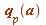
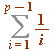
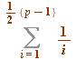
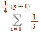
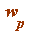

Some classic congruences (Fermat, Wilson, Lagrange, and some others ... ), and the Gauss- Wilson theorem
Fermat's 'little' Theorem, and introducing a standard term: the Fermat quotient, 
An exercise concerning , and the half and quarter sums  and 
Wilson's Theorem, and introducing another standard term: the Wilson quotient, 
Wilson's theorem went in two different directions, what one might call:
The Lagrange path
And now the Gauss path:
The Gauss-Wilson theorem